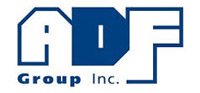
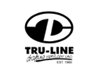
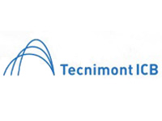
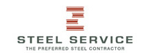
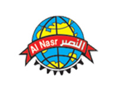

-

Carolyn Hanson
Vice - President, Engineering and Operations| ADF Group Inc.ADF has employed the services of Techflow Inc. on two projects currently underway, including the LaGuardia Airport Headhouse Terminal located in Queens, NY, and the West Hollywood Park project in West Hollywood, CA. Over the course of the last year, Techflow's services have been an asset to ADF's management and production teams, providing the resources and expertise required to properly detail the aforementioned projects and provide shop drawings to enable the fabrication of roughly 14,200 tons of structural steel between these two projects.
In an effort to ensure seamless coordination of issues as they arise, ADF and Techflow engage in daily coordination meetings, a service which Techflow provides free of charge, to provide ADF with fast turnaround of hot issues and alleviate impact on our fabrication operations. Techflow Inc.'s team of detailers are knowledgeable of the applicable codes and specifications that are necessary to properly detail modern steel structures and are well versed in the complexities encountered during the detailing process. In addition to the detailing services provided, Techflow Inc. also aids in flagging erection issues, particularly concerning bolt clearances or access for field welding, which allows ADF to provide a better service to our clients.
Overall, while every project has its issues, Techflow has been an asset that ADF is grateful to have on board and we look forward to continuing to work with them on future projects.
-

Mohsin Momin
Project Manager| Limson Engineering Pvt. Ltd.I would like to express my gratitude for your superintendence work for our Dr. D. Y. Patil University School of Management project. Thank you to the whole team of Tech Flow and we want to appreciate your support and detailing services for our project. The drawings detailing was done in best way it was very easy for us to read for our fabrication and erection work which helped us in our total project. Your team's consultative and inclusive approach created positive relationships between the full project team. We would like to rate Tech flow 9 out of 10 for the detailing work done for our project. Your team has made significant contribution to the success of this project. Thank you again
-

Jerry Studdard
Project Manager| Ellis Steel Co, Inc.Ellis Steel excels in fast-paced, complex structural and miscellaneous steel projects. The ability to be successful in this type of work requires the assistance of proven detailing partners. We have found this type of partner in TechFlow Inc. Their ability to provide drawings in a short time frame specifically aided us in an ultra-fast paced multi-building project that we successfully completed on time and within budget this year. We wouldn't hesitate to recommend Techflow to anyone looking for performance within the constraints of this type of project.
-

Jeremy Duke
Project Manager| NuSteel Fabricators, Inc.It is always a pleasure to work with the staff at Tech-Flow. Everyone is courteous, friendly, and professional. Over the time we have been working with Tech-Flow, NuSteel has made changes to our drawing process system and they has worked with us during this change and have implemented needed changes to how we import files. They are always willing to make needed drawing changes to suit our needs, and go out of their way to help. I have worked with all the employees and have had a pleasant experience with them all. Thank you for the good work and I look forward to working with you in the near future on our next project.
-

Cliff Gibbons
President| Tru-Line Drafting Services IncTru-Line Drafting Services is a structural steel detailing firm located on the west coast of Canada. Our first exposure to Techflow was back in 2005 when we first decided to explore off-shore detailing. Although we had our ups & downs in the beginning we were able to work through them as Techflow & their management team showed an amazing ability to adapt and work through problems whether it was technical, schedule, or quality related. We have worked exclusively with Techflow over the last 9 years on approximately 140 projects and counting. Thank-you Techflow for you honesty and integrity over the years and we look forward to working with you long into the future.
-

M K Duggal
GM ( Civil & Structural )| Tecnimont ICB Pvt LtdIt has been a pleasure working with Techflow. Techflow has provided quality detailing services for TICB on several projects over the past few years. Techflow team has an outstanding commitment to quality and are highly responsive to our needs. The projects Techflow has done for TICB have been technically challenging with demanding schedules, Techflow has met every schedule and timeline requested from us. Techflow detailing team is a great resource which we rely on to complete projects in time. We look forward to our continued success and excellent working relationship.
-

Julian Monks P.E.
Engineering Manager| Steel serviceTechflow's consistent ability to provide on time delivery of Quality Shop Drawings, allows Steel Service to meet or beat our Customers Delivery Schedules.
-

T.H.Manzoor
Sr. Project Manager| Al Nasr EngineeringWe have engaged Techflow Engineers for our engineering drawings solution for all our projects for over past 7 years. We found sincere dedicated team working for them to achieve quality products within the project schedule. We have well noted their capabilities and pro activeness for resolving the complicated steel member connections especially on the intricate architectural shape features. It is always our first choice to work with them for all our future projects. We wish them all success in their future endeavors.